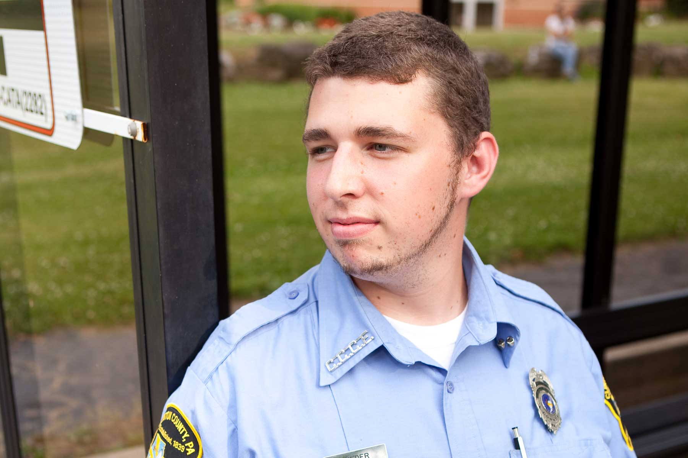

The CJ program at South Hills will launch your career in the field of justice — from law enforcement to investigation to corrections to advocacy. Graduates of this program earn Associate in Specialized Business degrees.
Two-Year Associate in Specialized Business (ASB) Degree Program
The Criminal Justice program at South Hills will launch you on a career in the field of justice—from law enforcement to corrections to advocacy. The program is designed to be very hands on, combining theory with practice and application. The CJ program provides students with an understanding of the criminal justice system and the socio-economic factors that impact the field. As a South Hills Criminal Justice student, you will learn investigative techniques, basic security skills and the criminal legal process/procedures for the PA court system, as well as the basics of criminal and family law. Students even receive training to earn Oleoresin Capsicum Aerosol Training (OCAT - pepper spray) and Practical and Tactical Handcuffing (PATH) certifications.
Our Criminal Justice graduates are working in careers as Local and State Law Enforcement Officers and Deputies, Juvenile Justice Center Professionals, Corrections Officers, Private Security Guards, Loss Prevention Managers and Victim Advocates.
Successful students in this program will be ethical, hard working, willing and eager to learn, and believe in the criminal justice system and the law.
Jennifer Stover
CJ Program Coordinator / Full-time Instructor
Sarah Stoltz
Full-time Instructor